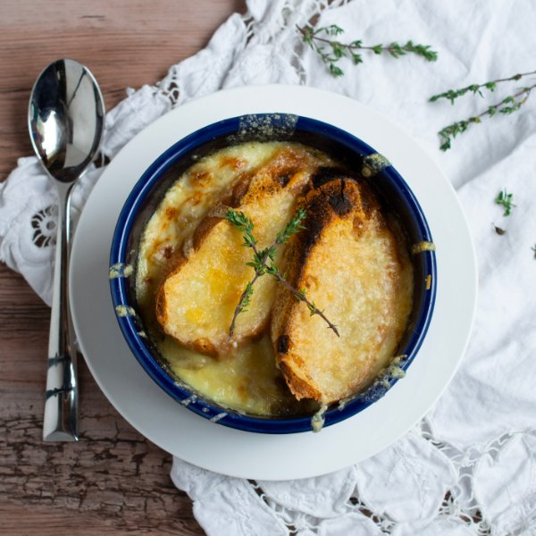

Quick & Cheesy French Onion Soup

Total Time
45 min
Nutrition (Per Serving)
696.5 kcalCalories
35 gProtein
43 gCarbs
44.3 gFat
Full nutrition table
| Calories | 696.5 kcal |
| Total fat | 44.3 g |
| Saturated fat | 25.8 g |
| Trans fat | 1.4 g |
| Cholesterol | 116.4 mg |
| Sodium | 823.3 mg |
| Carbohydrates | 43 g |
| Fiber | 5.4 g |
| Sugars | 8.1 g |
| Protein | 35 g |
| Potassium | 754 mg |
| Calcium | 441.2 mg |
| Iron | 3.5 mg |
| Vitamin A | 504.7 IU |
| Vitamin C | 6.9 mg |
| Vitamin D | 29 IU |
Cookware
Ingredients
- 48 fl ozchicken or vegetable broth
- 1 (8 oz) blockmozzarella cheese
- 2 ozParmesan cheese
- 8 sliceswhole grain bread
- 3 mediumyellow onions
- black pepper
- butter, unsalted
- salt
- soy sauce
- thyme, dried
- Worcestershire sauce
Steps
- Preheat a large pot over medium heat.
- Peel and very thinly slice onions, using a mandoline slicer if desired.3 medium yellow onions
- When the pot is warm, melt butter until foamy. Add onions to the pot and season with salt to help them release their moisture. Cook until tender, stirring occasionally, 4-5 minutes.½ cup butter, unsalted
¼ tsp salt - Add broth, water, soy sauce, Worcestershire, pepper, and thyme; bring to a boil. Reduce heat to low, cover and simmer, 10-15 minutes.48 fl oz (6 cups) chicken or vegetable broth
1 cup water
2 tbsp soy sauce
4 tsp Worcestershire sauce
½ tsp black pepper
¼ tsp thyme - While soup is simmering, slice bread (if required) and grate cheese; set aside.8 slices whole grain bread
1 (8 oz) block mozzarella cheese
2 oz Parmesan cheese - Preheat oven to broil and position rack under the broiler.
- Divide soup into oven-safe bowls or ramekins, place bowls on a baking sheet pan. Top with bread slices and cheese.
- Place under broiler until cheese is golden brown, about 1 minute. Watch it carefully as it can burn easily.
- When the soup is brown and bubbly, carefully remove from oven using oven mitts and place bowls on a plate. Enjoy!